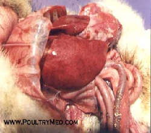

Fowl Typhoid
Is a septicemic acute or chronic disease of domesticated birds. It is worldwide distributed and natural outbreaks occur in chicken, turkeys, guinea fowl, duckling and game birds. A clinical disease usually occurs in growers or adult birds although chicks can be affected. Both horizontal and vertical transmission occurs during transmission.
Salmonella gallinarum
- If birds are hatched from infected eggs, dead chicks may be seen on the hatching trays
- Adherence of whitish material to the vent
- Sudden drop in feed consumption, ruffled and pale heads and shrunken combs and decrease in egg production
- Listlessness and sulfur-colored diarrhea

- Bronze colour liver which is swollen & friable.
- Pericarditis with turbid yellow fluid in heart.
- Ciprocin Vet solution 1ml/liter water with Moxacil Vet powder 1gm/liter water for 3-5 consecutive days or, Doxytin-Vet powder-1 gm/litre for 3-5 days
- Hameco pH 1ml/liter water twice for 3 days